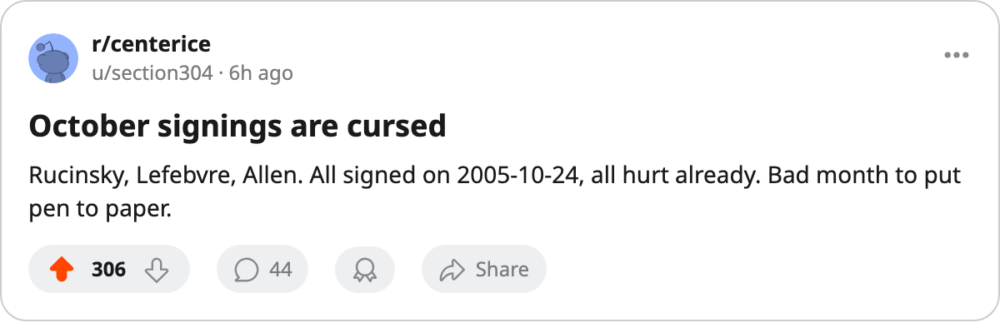

The Infirmary: The Newest Signings Are Already on the Injured List
Nashville, Pittsburgh and Vancouver signed players on 2005-10-24. All 3 are out, and Pittsburgh's 112 days lost lead the league.
 Ray CallumSenior correspondent · Home Ice Network
Ray CallumSenior correspondent · Home Ice NetworkThree players signed contracts on 2005-10-24, and all 3 are on the injured list today.
 Nashville Predators signed Martin Rucinsky79 for $508,430. He is out with a wrist injury, return targeted for 2005-11-04.
Nashville Predators signed Martin Rucinsky79 for $508,430. He is out with a wrist injury, return targeted for 2005-11-04.  Pittsburgh Penguins signed
Pittsburgh Penguins signed  Guillaume Lefebvre75 for $142,680. He has a rib injury and is targeted for 2005-10-30.
Guillaume Lefebvre75 for $142,680. He has a rib injury and is targeted for 2005-10-30.  Vancouver Canucks signed
Vancouver Canucks signed  Bryan Allen74 for $378,270. He is out with an elbow injury until 2005-11-03.
Bryan Allen74 for $378,270. He is out with an elbow injury until 2005-11-03.
That is the second group of signings this month to go down together. The men signed on 2005-10-17 did the same, most of them inside a week.
The bills, by club
| club | spells | days lost |
|---|---|---|
| Pittsburgh | 10 | 112 |
| NY Islanders | 5 | 100 |
| Philadelphia | 9 | 97 |
| Atlanta | 6 | 75 |
| Detroit | 3 | 62 |
Pittsburgh's 112 days lost are the league's most. Three Penguins are on the list now:  Brad Chartrand73 (ankle, out to 2005-11-23), Rico Fata70 (abdomen, out to 2006-01-12) and Lefebvre (rib, back tomorrow). The club holds 12 points from 8 games and sits 4th in the East.
Brad Chartrand73 (ankle, out to 2005-11-23), Rico Fata70 (abdomen, out to 2006-01-12) and Lefebvre (rib, back tomorrow). The club holds 12 points from 8 games and sits 4th in the East.
The Islanders have 5 spells and 100 days lost.  Rick DiPietro86 has started all 8 of their games.
Rick DiPietro86 has started all 8 of their games.
Where the hits land
Elbows are the most common injury, 8 spells at an average of 12 days. Ribs follow with 6 spells at 8 days, then ankles with 4 at 11.
Legs are the longest layoffs: 3 spells at an average of 59 days. Philadelphia's  Marco Sturm85 is out to 2005-12-30, Florida's
Marco Sturm85 is out to 2005-12-30, Florida's  Branislav Mezei72 to 2005-11-13, and Atlanta's
Branislav Mezei72 to 2005-11-13, and Atlanta's  Yannick Tremblay67 to 2005-12-28.
Yannick Tremblay67 to 2005-12-28.
Detroit lose 62 days and keep winning
Detroit's 3 spells have cost 62 days.  Brendan Shanahan80 is out with a back injury until 2005-11-29, and
Brendan Shanahan80 is out with a back injury until 2005-11-29, and  Pavel Datsyuk70 is out with a hip injury until 2005-11-17. The Red Wings are 5-3-1, and
Pavel Datsyuk70 is out with a hip injury until 2005-11-17. The Red Wings are 5-3-1, and  Manny Legace84 has started all 9 games.
Manny Legace84 has started all 9 games.
Minnesota have lost 45 days to 9 spells and hold the fewest points in the West, 6 from 9 games. Colorado have 6 spells and 6 days lost; New Jersey 3, St. Louis 2, Columbus 1. Montreal, Ottawa, San Jose and Edmonton have lost no days at all.
